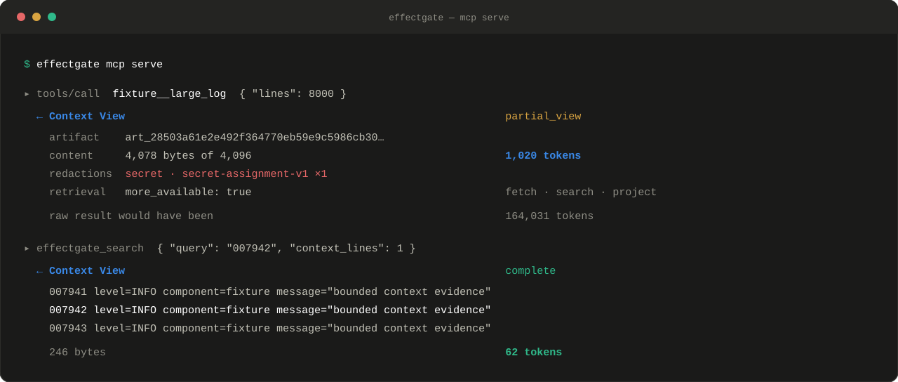

Download RPM. Use your distribution's local RPM command if it does not ship dnf.
Connect once, then ask normally.
User scope makes one EffectGate server available to every project and future Claude Code session. Start with the deterministic fixture, then connect only reviewed real backends.
Connect EffectGate once
This command defaults to user scope and does not need to be repeated for each project or session.
effectgate connect claude
effectgate connect claude --check
What it changes: it saves the same registration as claude mcp add --transport stdio effectgate --scope user -- effectgate mcp serve; it does not edit your permission settings.
Allow only this server
Run /permissions in Claude Code and allow mcp__effectgate__*, or merge this rule into your existing user settings. Do not overwrite other settings.
User settings live at ~/.claude/settings.json. Project scope uses .claude/settings.json; local scope uses .claude/settings.local.json.
Ask in natural language
Claude receives routing guidance from EffectGate. You describe the result; Claude bootstraps the Context View and chooses search, projection, or continuation.
Use EffectGate. Analyze the demo log, find line 150,
and include its citation. Choose the appropriate
EffectGate retrieval operation yourself.
Or configure another MCP client
Point any stdio MCP client at effectgate mcp serve. The bundled fixture opens no port and contains synthetic data only.
EffectGate is an MCP server. Claude may select its tools from a natural-language request, or you can name the exact tool. It is not activated by @ or $.
Natural language
Ask Claude to use EffectGate and state the outcome you need. This is the easiest route.
Exact MCP tool
Name effectgate_search, effectgate_fetch, or another published tool when you need deterministic routing.
Optional /skill
Create the wrapper below if you want a reusable /effectgate or one-turn /no-effectgate command.
# Text or logs
Use EffectGate. Find the root cause in the connected logs and cite the evidence.
# Structured records
Use EffectGate. Find failed customer records and return only id, status, and reason.
# Mixed development task
Build this app. Use EffectGate for connected large data, and use normal tools for coding and testing.
Syntax truth:@ refers to files and other host resources. $ARGUMENTS is expanded inside a Claude skill. Neither one invokes an MCP server. EffectGate 1.0 does not ship a Claude plugin or slash skill. A slash command works only after you install the optional wrapper described below.
Connected does not mean used on every prompt: EffectGate tools become available to Claude, often through deferred Tool Search, but EffectGate does not intercept native tools. Its paging, citation, redaction, and withholding rules apply only after Claude calls a tool through the EffectGate server.
Context features
These tools retain large evidence locally and return only the cited portion Claude needs.
Bound a large result automatically
Automatic on an eligible tool result
There is no separate “bound this” command. The result is bounded automatically when the backend call goes through EffectGate and cannot pass through safely as a small typed result.
Ask naturally
Tell Claude to use the EffectGate server for the backend call.
Name the tool
For the bundled fixture, call fixture__large_log.
Use EffectGate, call fixture__large_log with {"lines": 8000},
and report the returned byte range, content digest, and whether more is available.
Claude canonical name: when the server is named effectgate, the permission/tool name is mcp__effectgate__fixture__large_log.
Fetch the next cited page
effectgate_fetch
Use the opaque cursor returned by a partial Context View. The cursor is session-bound, authenticated, single-purpose, and expires after ten minutes.
Ask naturally
“Continue the same EffectGate result until you have the next cited page.”
Call exactly
effectgate_fetch with only the returned cursor.
Use effectgate_fetch with the cursor from the previous result.
Do not invent or edit the cursor. Stop when more_available is false.
Search inside a retained artifact
effectgate_search
Search typed-mode artifacts with a case-sensitive literal query. Supply the exact artifact_id returned by the original Context View.
Ask naturally
Ask Claude to find a literal string without paging through the full log.
Call exactly
Provide artifact_id, query, optional context_lines, and optional max_tokens.
Use effectgate_search on ARTIFACT_ID with:
{"query":"ERROR request_id=42","context_lines":2,"max_tokens":512}
Return the matching text and its exact source byte range.
Extract only selected fields, columns, records, or an exact Markdown ATX section while preserving source citations.
For JSONL:
Use effectgate_project with {"artifact_id":"ARTIFACT_ID","format":"jsonl",
"fields":["/timestamp","/level","/message"],
"filter":{"pointer":"/level","equals":"ERROR"},"limit":50}.
For CSV:
Use effectgate_project with {"artifact_id":"ARTIFACT_ID","format":"csv",
"columns":["timestamp","status","message"],
"filter":{"column":"status","equals":"failed"},"limit":50}.
For Markdown:
Use effectgate_project with {"artifact_id":"ARTIFACT_ID",
"format":"markdown","heading":"Known limitations","max_tokens":512}.
Compact mode: use effectgate_artifact_project for retained content.
Redact secrets and withhold opaque content
Automatic safety invariant
Assignment values, bearer tokens, and selected token prefixes are redacted before every emitted page. Suspicious opaque content is withheld instead of guessed.
Observe it
Ask Claude to report redactions, status, and safe diagnostics from the Context View.
Fixture test
Call fixture__large_log with includeSecrets: true to insert synthetic sentinels.
Use EffectGate to call fixture__large_log with
{"lines":200,"includeSecrets":true}.
Confirm that synthetic sentinels do not appear in any returned page.
Cannot be disabled inside EffectGate: there is no prompt or flag that returns unredacted source. Bypassing the server also bypasses its citations and safety checks.
Catalog and effect features
These features change how tools are exposed or place a protected write behind operator evidence.
Compact mode exposes generic contracts instead of every admitted backend schema. Select it when the MCP server starts. A prompt cannot switch an existing process between typed and compact mode.
Use the effectgate-compact server.
Search admitted capabilities for "large log", describe the returned ref,
call it with {"lines":200}, then search the retained artifact for "line 150".
The compact sequence is: search capability metadata, describe one returned ref, call that ref, then continue with effectgate_fetch, effectgate_artifact_search, or effectgate_artifact_project.
Call a reviewed read-only backend
Configured backend tool, namespaced by source
Start EffectGate with a digest-pinned reviewed config. Claude can then select the admitted public tool naturally or by exact name.
Use the EffectGate MCP server and its admitted lookup tool.
Do not call the native backend directly. If no reviewed capability matches,
stop and tell me instead of bypassing EffectGate.
Bootstrap rule: a source-prefixed tool published by the EffectGate server is the admitted, gated entry point, not a bypass. Call it first; when its result is large, EffectGate returns the artifact_id used by search, projection, and fetch. Never guess an artifact ID.
EffectGate refuses writes, dynamic catalogs, missing safe-read annotations, executable drift, source drift, identity drift, and calls to names the client never discovered.
Run a protected reversible effect
filesystem.apply_patch in the configured effect fixture
Serve the configured phase/Capsule runtime, ask Claude to use its published effect tool, then approve the exact operation from another local terminal.
Use the EffectGate protected filesystem.apply_patch tool for this exact change.
If it returns awaiting_approval, stop and show me the operation ID.
Do not replace it with a native file-write tool.
Inspect and approve with effectgate approve --config FILE --operation ID, then repeat the identical MCP call. Changed arguments are denied.
Name clarification:mcp skill serve is EffectGate's internal phase/Capsule runtime. It does not install a Claude Code slash skill.
Enable the token ledger and session output guard
Runtime configuration, not an MCP call
The output guard is always present. Set a lower session ceiling or persist content-free accounting when the server starts.
Restore and rollback remain plan-first and confirmation-bound. See the protected-effect section below for the complete recovery sequence.
Choose or block EffectGate
Natural-language preference is convenient. Permission rules or a one-turn Claude skill provide deterministic blocking.
Prefer EffectGate for one prompt
This is the shortest option and needs no extra setup:
For this request, use EffectGate for every matching tool call.
Do not call the native backend directly. If EffectGate has no admitted
capability for the task, stop and tell me.
This is an instruction to Claude, not a hard permission boundary.
Add an optional /effectgate skill
Create .claude/skills/effectgate/SKILL.md in a project, or ~/.claude/skills/effectgate/SKILL.md for all projects:
---
name: effectgate
description: Route matching tool work through the configured EffectGate MCP server.
disable-model-invocation: true
---
For this turn, use EffectGate for every matching tool call.
Do not bypass it with a native backend tool.
If no admitted capability matches, stop and explain the gap.
Complete this request:
$ARGUMENTS
Invoke it with /effectgate Investigate the large build log. The slash name comes from the skill directory. This wrapper is optional and is not bundled with EffectGate 1.0.
Claude skill lifecycle: invoked skill text remains in the conversation context. To reverse that preference later, explicitly say “stop preferring EffectGate” or invoke the hard one-turn blocker below.
Soft-disable EffectGate for one prompt
For this request only, do not use any tool from the EffectGate MCP server.
Use native tools only, and do not search for EffectGate capabilities.
This usually works, but the tools remain available to Claude. Use the next method when the block must be enforced.
Hard-disable EffectGate for exactly one prompt
Create .claude/skills/no-effectgate/SKILL.md:
---
name: no-effectgate
description: Block every configured EffectGate MCP tool for one user turn.
disable-model-invocation: true
disallowed-tools: mcp__effectgate__* mcp__effectgate-compact__* mcp__effectgate-effects__*
---
Complete this request without EffectGate:
$ARGUMENTS
Run /no-effectgate Explain this file. Claude Code removes those tools for that turn, and the restriction clears when you send the next message. Adjust the server-name segments if you configured different names.
Disable it for a session, project, or permanently
# Start one Claude session without the default EffectGate server
claude --disallowedTools "mcp__effectgate__*"
# Inspect or disable the server for the current project
/mcp
# Remove its saved configuration
claude mcp remove effectgate
The /mcp command runs inside Claude Code and can toggle a configured server for the project. Removing the server is persistent until you add it again.
Claude Code 2.1.251 found the single rare_status row in BENCH-JSON-002. Both EffectGate modes returned the exact answer while sending less input context than the matched native run.
57.5%less with typed EffectGate
34.0%less with compact EffectGate
45.7%combined reduction in this case
P1 typed keeps each tool's typed contract and lets native Tool Search defer it. P2 compact exposes four generic search, describe, call, and fetch contracts; it suits very large catalogs but may need more discovery steps.
Current overall estimate: across the three observed real-Claude task groups, P1 is 38.3% lower, P2 is 10.9% lower, and their combined input is 24.6% lower than matched native baselines. This small sample is evidence, not a universal saving guarantee. Inspect the content-free record.
Automatic routing check: Claude Code 2.1.259 independently selected search, JSONL projection, sequential fetch, and a mixed native/EffectGate route in four of four real sessions. Inspect the sanitized qualification.
claude-code / real runBENCH-JSON-002 · P1
$ claude "Use EffectGate to find rare_status"
ToolSearch → EffectGate target corpus
EffectGate → target_corpus
EffectGate → effectgate_search
Claude → StructuredOutput
{"customer_id":"customer-target-42424",
"id":42424,"status":"rare_status"}
Claude 2.1.251P1 typedtask oracle: passraw stream deleted
Large output stays local.
EffectGate stores the complete result in a temporary content-addressed store. The model receives only a bounded, cited, redacted view.

Search instead of scrolling
effectgate_search performs a bounded, case-sensitive literal scan. It returns source-ordered windows with exact byte citations, not an invented summary.
4 KiB
default first source-content view
Fail closed
Opaque, oversized, corrupt, expired, cross-session, and unsupported results are withheld. The model gets a bounded diagnostic rather than source leakage.
10 min
authenticated cursor lifetime
Project records with citations
Use RFC 6901 pointers for JSON and JSONL, named columns for CSV and TSV, or exact ATX section titles for Markdown. Each emitted record maps back to source bytes. Redaction runs before every page, including fetched and projected pages.
Put effects behind evidence.
The v1 effect path is a configured, reviewed fixture for learning and qualification. It demonstrates exact intent binding, single-use approval, idempotent dispatch, verification, receipts, backup, restore, and rollback.
Scope: v1 does not approve arbitrary production writes. Use the fixture until you have independently reviewed the adapter and trust boundary.
Create and inspect a configuration
Prepare a skill folder containing SKILL.md and phases/modify.md. Preview the generated paths and digests first.
The first identical MCP call returns awaiting_approval. Keep the runtime open, inspect exact arguments over the user-local operator channel, then approve with the printed digest.
Backup and restore reject existing targets, unknown databases, bad manifests, digest drift, and overlapping paths. Rollback is plan-first and confirmation-bound.
Connect one reviewed read-only backend.
EffectGate can proxy a third-party stdio server only after you pin its executable, reviewed source files, identity, launch binding, and immutable catalog.
Capture exact bytes
Hash the executable and every source file you reviewed. Do not auto-trust the catalog reported by the child process.
Admit only closed-world reads
Every catalog tool must declare read-only, non-destructive, idempotent, and closed-world annotations. Any mismatch, drift, extra catalog page, or invented backend name is denied.
Intent-bound approval, idempotency, verification, receipts, and recovery are implemented against reviewed fixtures.
Real stdio backend
Reviewed read only
Exact digest, identity, catalog, and safe-read annotations are required.
HTTP backend
Main preview
The Streamable HTTP JSON adapter is post-v1 preview work and is not in the public 1.0 package.
Secret detection
Heuristic
Three deterministic high-signal rules, not comprehensive secret or PII protection.
OS isolation
Not provided
Backend processes run with the current user's operating-system permissions.
Independent audit
Pending
Maintainer sign-off proves source binding, not third-party assurance or separation of duties.
Native packages
Unsigned
MSI, PKG, DEB, and RPM are qualified but not code-signed or notarized.
Troubleshooting.
Most setup failures are version, PATH, client configuration, or reviewed-config mismatches. Start with the CLI before debugging the MCP host.
effectgate is not found
Open a new terminal after installation and confirm your global npm binary directory is on PATH. Run npm prefix --global to locate the global prefix.
The CLI rejects my Node.js version
Run node --version. EffectGate 1.0 requires Node.js 24 or newer. Install or select a compatible runtime, then reinstall the package.
My MCP client shows no tools
First run effectgate --version. Then confirm the client launches effectgate mcp serve. A completed protected phase intentionally publishes no effect tool.
A reviewed backend fails admission
Run effectgate doctor --config FILE --json. Recheck executable and source digests, working directory, server identity, exact one-page catalog, and all four safe-read annotations.
I want to remove EffectGate
Run effectgate uninstall --config FILE to print the package removal command and preserved paths. State deletion is separate and confirmation-bound through effectgate purge --config FILE.
I found a security issue
Do not publish technical details in an issue. Use GitHub private vulnerability reporting when available, or follow the private process in SECURITY.md.
Start with the fixture.
Learn the result and approval flows locally, then admit only backend bytes you have actually reviewed.